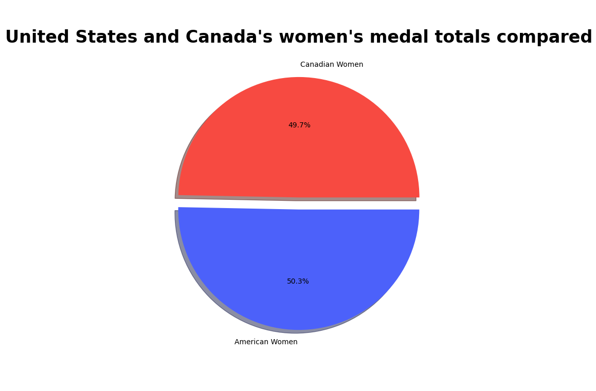

Who's superior in the Winter Olympics?
Canada or the United States?
In the Winter Olympics there are two big forces when it comes to the hardware. The USA reigns as champion with the most medals at 653, Canada has by far the most gold medals at 315, and is not far behind in overall medal count at 625. But the question is, who is the true champion of the Winter Olympics?
Overall Medals: Who truely has the better trophy case?
While the USA does have more medals, a small margin, Canada has much more gold medals. The question becomes, how do we formulate this information fairly and effectively?
Gold,Silver,Bronze pie charts
As you can see Canada's gold can match up with America's silver totals, Silver with Gold, and Bronze with each other. The system I propose, is a point system where each gold medal counts for 3 points, silver for 2, and bronze for 1. With this point system applied America ends up with a score of 1,306 while Canada gets a score of 1,458. If you believe in the idea that medal hierarchy should be applied then Canada is the clear winner.
Consistency is one of the most important traits of a champion, but how do the US and Canada stack up over the years?
Canada and the US have been involved in the Winter Olympics from the start and have followed a pretty similar trend for the history of the olympics
From this chart I can see it has been very close over the years, while I notice that the US seems to have higher highs and lower lows. Both countries have had dominant years, for the USA 1932, 1972, and 1980 are standouts, as for Canada 1992, 2006, and 2014 are solid years. Also a neat fact that the US has had pretty standout years both times they were hosts at Lake Placid, talk about homefield advantage. This data isn't exactly definitive so I provide you with another list.

In this graph again you can see that it is very close. The US has been the top country in the games only once more than Canada, while Canada has been in the top 5 once more than America. Overall these two have only missed the top 5 six and seven times respectively. This is a close battle between the giants.
Who's Winning?
For the two powerhouse countries where are the medals coming from?
Men & Women pie charts
Both of the totals are pretty close with each of the differences being sub 50 medals each. While because of obvious social implications the women are behind the men but both countries show similar percentages and totals, showing no outliers for our comparison.